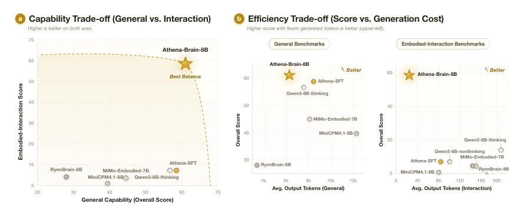
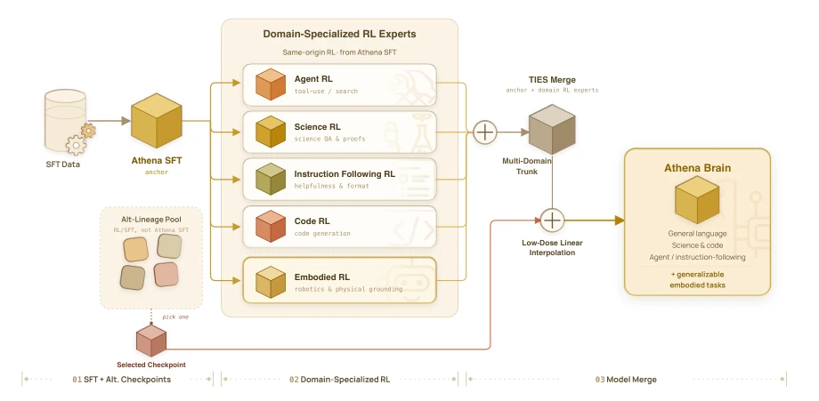
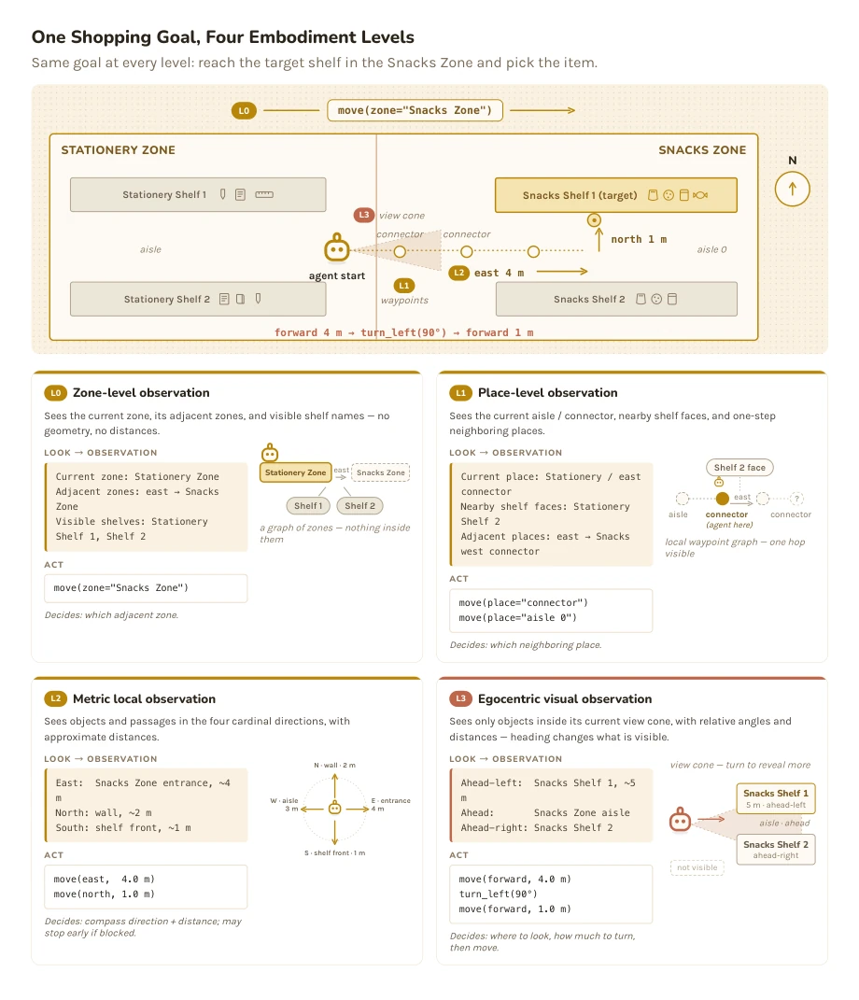
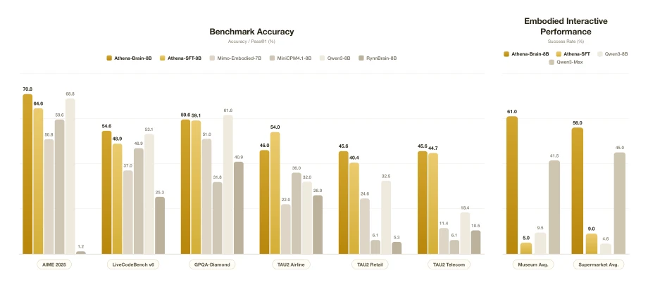
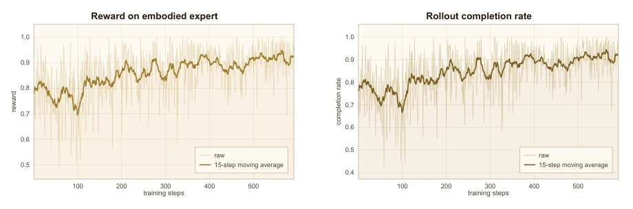
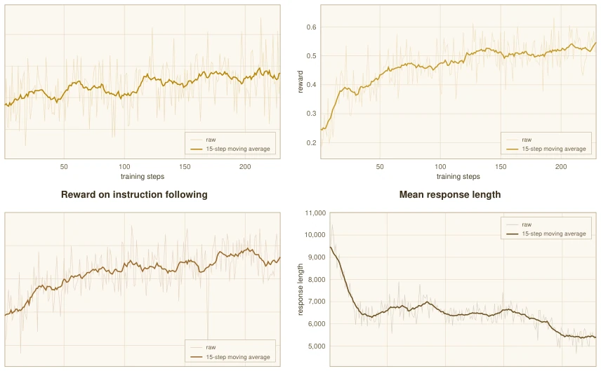
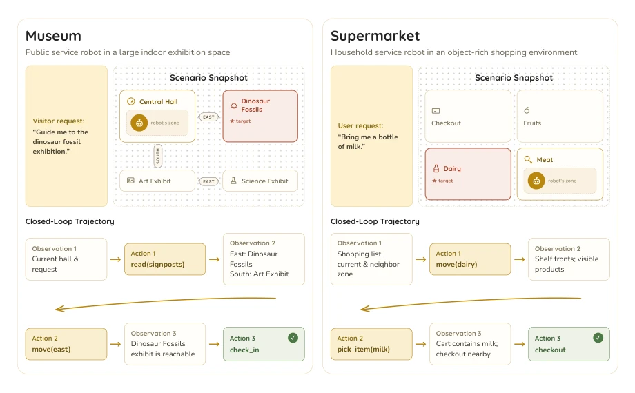
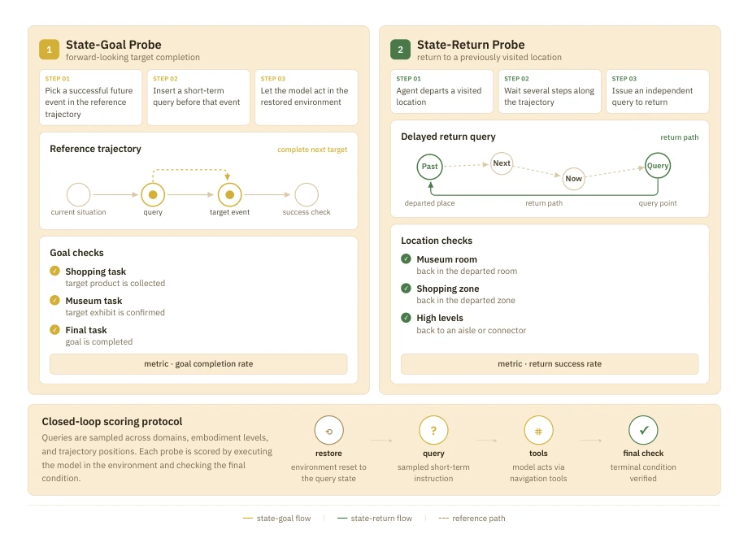
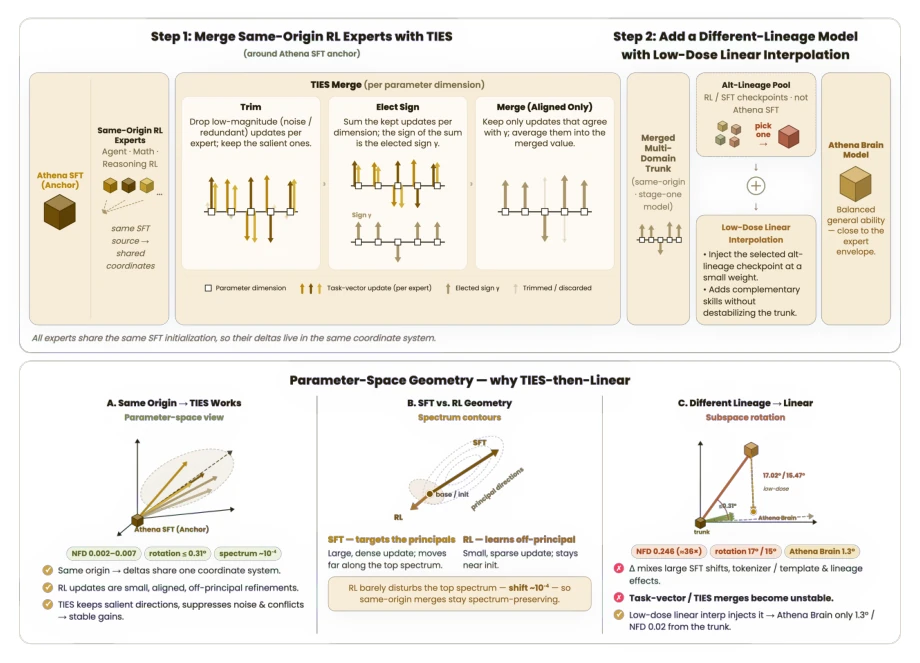
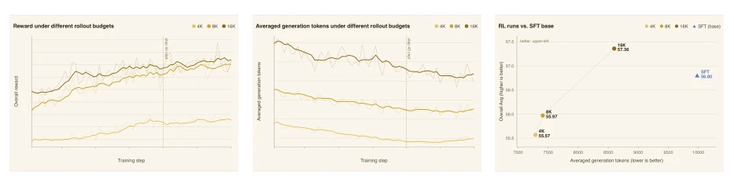

This report attempts to address the disconnect between "general intelligence" and "embodied interaction" using an 8B model, effectively painting a promising picture for edge-side robots. The biggest highlight of Athena-Brain lies in "efficiency", forcibly compressing inference length via Token Budget Reward, which is crucial for latency-sensitive robots. However, to be a bit critical, essentially it remains a "text agent"; taking a few steps in Museum and Supermarket, it is still far from true end-to-end control (VLA). Although performing well compared to Qwen-Max on embodied tasks, the 8B ceiling is evident, and complex physical interaction likely still relies on large model distillation. Additionally, its training heavily relies on simulation environments, raising doubts about generalization ability in the real world. However, for edge-side deployment, this "sufficient and fast" strategy is indeed more pragmatic than blindly stacking parameters, at least proving that small models can also outperform large models in specific domains.
研究动机Motivation
现有大语言模型（LLM）在语言理解上表现卓越 [1]，但作为机器人“大脑”时面临两大困境：一是通用模型推理冗长，交互延迟高，难以满足实时控制需求；二是专用具身模型（如 MiMo [8]、RynnBrain [9]）往往牺牲了通用推理能力，难以应对开放世界的复杂任务。端侧部署要求模型既要有强大的世界知识，又要能高效决策。当前方案往往顾此失彼，要么通用性强但响应慢，要么具身能力强但缺乏泛化。因此，亟需一种能在 8B 量级下平衡通用智能、具身交互与生成效率的模型，以支持机器人实时响应与长期任务规划，避免云端依赖带来的隐私与延迟风险。
Existing large language models (LLMs) perform excellently in language understanding [1], but face two major dilemmas when acting as a robot "brain": first, general model inference is verbose, interaction latency is high, making it difficult to meet real-time control requirements; second, specialized embodied models (such as MiMo [8], RynnBrain [9]) often sacrifice general reasoning ability, making it difficult to cope with complex tasks in open worlds. Edge-side deployment requires models to have both powerful world knowledge and the ability to make efficient decisions. Current solutions often neglect one for the other; either strong generalization but slow response, or strong embodied ability but lack generalization. Therefore, there is an urgent need for a model that can balance general intelligence, embodied interaction, and generation efficiency at the 8B scale, to support robot real-time response and long-term task planning, avoiding privacy and latency risks brought by cloud dependency.

Figure 1: Overall comparison of Athena-Brain-8B with representative open-source models across general capabilities, embodied capabilities, and generation efficiency. Athena-Brain-8B is designed to balance these three objectives within a compact 8B language model. Athena-Brain-8B maintains competitive general language performance, achieves strong embodied capabilities among models of similar scale, and generates substantially shorter responses than its corresponding thinking counterpart, demonstrating an effective balance between capability and generation efficiency.
Overall adopts a four-stage post-training pipeline. First, conduct dual-stage general SFT, first broadly covering multi-domain instructions, then refining to improve quality and reasoning consistency. Next, introduce general RL, utilizing GRPO algorithm [15] combined with Token Budget Reward, forcing the model to reduce generated tokens while answering correctly, solving the inference verbosity problem. Specifically, Reward contains task correctness and Token budget parts, encouraging efficient reasoning. The core innovation lies in embodied expert training, constructing Museum and Supermarket simulation environments, designing E0-E3 four progressive embodied levels, from topological navigation to frustum perception, training the model's spatial understanding and planning capabilities through closed-loop interaction data. Training includes 4K steps SFT warm-up and GRPO optimization. Finally, integrate through Model Merge, first use TIES algorithm [16] to merge source-same RL experts, utilizing coordinate sign consistency to suppress conflicts, then use low-weight linear interpolation to introduce complementary SFT priors, avoiding catastrophic forgetting, finally obtaining a unified model balancing general and embodied capabilities.

Figure 3: Overview of the Athena-Brain-8B post-training pipeline. Starting from an open-weight base model, we build a general-capability foundation, train capability-specialized and embodied-interaction experts, and merge them into a single compact robot-brain model for on-device deployment.

Figure 6: Illustration of the four embodiment levels in the supermarket environment, ranging from zone-level planning to egocentric embodied interaction.
Evaluation covers general benchmarks (math, code, tool calling) and embodied interaction (Museum, Supermarket, ALFWorld). Baselines include same-scale open-source models (MiniCPM4.1 [13], MiMo [8]) and frontier API models (Qwen-Max [14], GPT-5.5 [2]). Results show that Athena-Brain-8B significantly outperforms same-scale models (such as RynnBrain [9]) in embodied task success rates, even surpassing Qwen-Max in some scenarios. Key advantage lies in efficiency, compared to Qwen3-8B-thinking, generated tokens reduced by about 70% and performance remains comparable. Ablation experiments show that RL stage significantly improves reasoning efficiency, while Merge strategy effectively retains general capabilities. However, there is still room for improvement in ALFWorld zero-shot generalization, and it mainly relies on text interaction, not directly evaluating visual perception performance.

Figure 2: Representative performance of Athena-Brain-8B on selected general language and embodied interaction benchmarks. Athena-Brain-8B maintains competitive general language capabilities while substantially outperforming existing compact embodied language models on in-domain embodied inter- action tasks. Notably, Athena-Brain-8B also achieves competitive or superior performance to several frontier large language models on in-domain embodied benchmarks, demonstrating the effectiveness of our post-training pipeline.

Figure 7: Training dynamics during embodied expert training. Both the average interaction reward and the roll-out completion rate steadily increase, indicating progressively improved interaction quality and stronger task-solving ability throughout training.
其他图片Other Figures

Figure 4: Training dynamics during General Reinforcement Learning. The first three subfigures show the reward improvement on representative reasoning tasks throughout reinforcement learning, demonstrating stable optimization and continuous capability enhancement. The bottom-right subfigure illustrates the average generated token consumption during training. Together, these results show that General RL simultaneously improves reasoning capability while encouraging increasingly concise reasoning through the token-budget reward.

Figure 5: Representative interactive scenarios used for embodied expert training. The Museum and Supermarket environments represent complementary service robotics domains. Despite different task objectives, both environments share the same observation-action interaction loop, providing consistent closed-loop interaction experiences for training Athena.

Figure 9: Two intermediate probes for embodied interaction. State-Goal evaluates near-future goal completion, while State-Return evaluates return to a previously visited location under partial observability.

Figure 10: Overview of the lineage-aware merge used to construct Athena-Brain-8B. Same-origin RL experts are consolidated around the Athena SFT anchor with TIES, while a complementary SFT prior from a different lineage is subsequently introduced through a conservative linear correction. The lower panels illustrate the parameter-space motivation for separating the two stages.

Figure 11: Effect of the maximum rollout budget (4K, 8K, 16K tokens) during General RL. (a) Train- ing reward curves: all three settings converge after approximately 40 optimization steps. (b) Average generation length over training: larger budgets sustain longer responses throughout optimization. (c) Downstream reasoning performance versus average generation length, evaluated with the step-40 check- point of each setting; the SFT baseline is shown for reference. Points toward the upper-left indicate a better capability–efficiency trade-off.